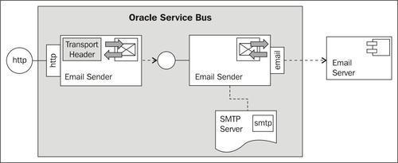
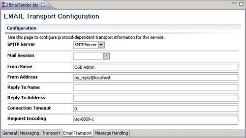
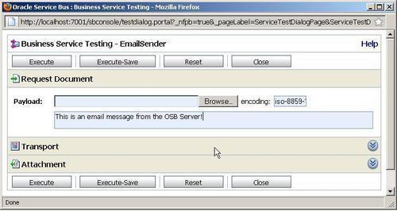
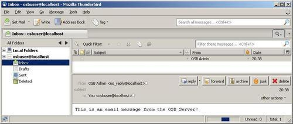
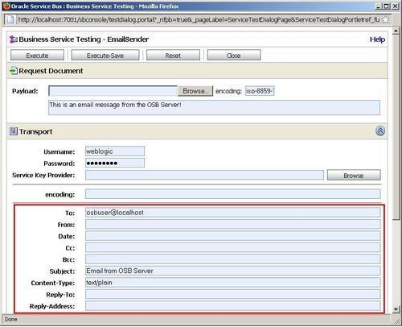
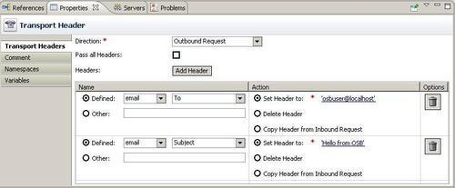

In this recipe, we will show how the Email Transport can be used to send e-mails. We will first implement a business service, which sends a message to a given e-mail address. The e-mail address is hardcoded in the endpoint of the business service.

In order to make the sending more flexible, we will also show how to use the Transport Headers action to dynamically set the e-mail address, the subject, and the mail body in a proxy service, before invoking the business service.
Make sure that the mail server is installed and configured as shown in the Using Email Transport to consume e-mails recipe.
First we will create the SMTP Server object, holding the reference to the SMTP server. In Eclipse OEPE, perform the following steps:
SMTPServer. localhost in the Server URL field. osbuser into the User Name field. osbuser into the Password and Confirm Password fields.Now with the SMTP Server in place, we can create the OSB project with a business service. In Eclipse OEPE, perform the following steps:
sending-emails and create a business folder within it. EmailSender. mailto:osbuser@localhost in the Endpoint URI field and click Add. OSB Admin into the From Name field. no_reply@localhost into the From Address.
Let's now deploy the OSB project. By performing the following steps, we can make sure that we also deploy the SMTP Server resource:
Now it's time for testing the business service. In Service Bus console, perform the following steps:
business folder of the sending-emails project.
osbuser@localhost.
Configuring a business service with the Email Transport creates a service which supports sending an e-mail to a given e-mail address. The e-mail address is hardcoded in the endpoint of the business service.
In order to reach to the e-mail server, we have created an OSB SMTP Server resource holding the configuration properties of our local e-mail server we want to talk to. This is a global resource and therefore it has to be created on an OSB configuration level and not on a single OSB project.
The content of the body variable upon invoking the business service determines the content of the e-mail message. If we look at the e-mail received in the previous screenshot, we can see that the subject is empty.
All the e-mail properties are available as transport-specific header properties. If we click on the Transport section on the test console, then we can specify a value for the subject, as shown in the following screenshot:

These properties can also be specified trough a Transport Header action, when invoking the business service from a proxy service.
We often need to control the sending of an e-mail based on incoming information, that is, we want to be able to change the To-address dynamically.
In order to be able to override the default settings configured on the Email Transport tab of the business service (From name/Address, Reply to, ...), we have to use a Transport Header action in the proxy service upon invoking the business service. This also allows us to set a value for the subject of the e-mail.
In Eclipse OEPE, perform the following steps:
proxy. EmailSender into the File name field, select the proxy folder for the location and click Finish.'osbuser@localhost' into the Expression field and click OK.'Hello from OSB' into the Expression field and click OK.